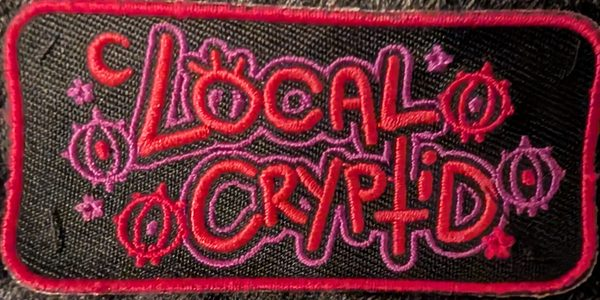
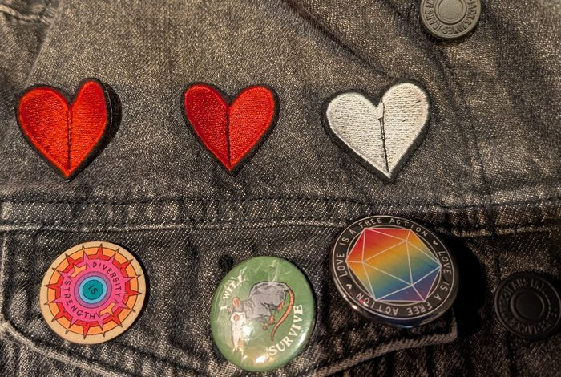
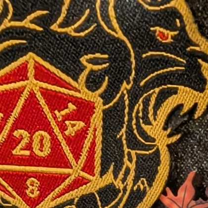
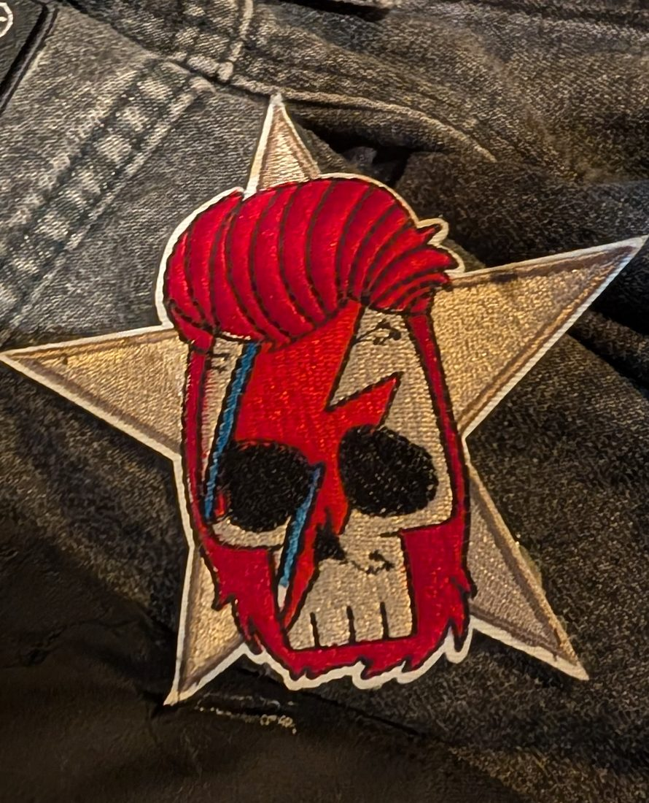
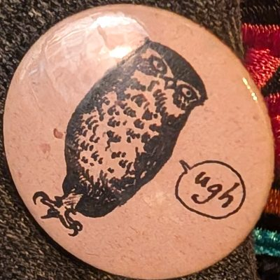
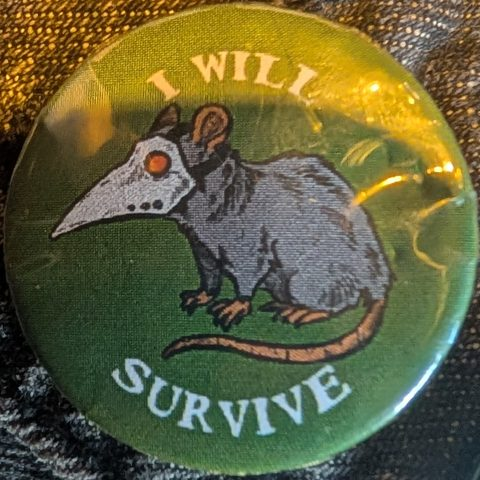
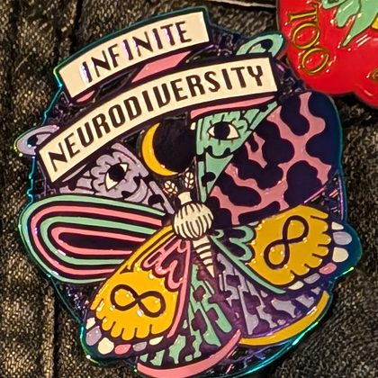
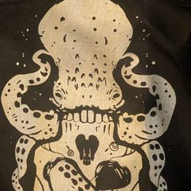

Infrastructure that makes quality sustainable, not heroic.
Coach
Selling testing, buy-in, bad news, coaching devs, strategy
Making the case for quality and for the people doing it.
0 Coat1 Build2 Play3 Player4 Wardrobe
Act 1 · The wardrobe
The ones we borrow

Costume
What's expected
The QA angle
Business Analyst
Requirements, acceptance criteria, translation
Finding what's not written. "Obviously we meant…"
Developer
Reading code, constraints, maintainability
The gap between what code does and what it was meant to do.
DevOps
Environments, CI/CD, observability, deploys
"What happens at 3am when this breaks?"
Project Manager
Progress, status, scope, dependencies
Knowing when "one more thing" tips the balance. The art of the sell.
Trainer
Sharing knowledge, quality culture
Quality isn't a phase. It's everyone's work.
UX Researcher
Behaviour, misuse, accessibility
"A user will do the ridiculous thing."
Leader
Head of and up: stakeholders, strategy, people
Making room for the experts around you. Sometimes this costume becomes the job.
0 Coat1 Build2 Play3 Player4 Wardrobe
Act 1 · The convention floor
One day, three costumes
Morning
Strategy and planning meetings
QA Lead
Afternoon
Heads down, automating
SDET
All day, in between
Store associates: the people actually using the app
Customer service
And inside a single ticket
The customer (several of them)The PM: what they want vs what's writtenThe dev: automation hooks?The tester
Shift left and right, in practice: I could see where a change would land, and who needed to know.
0 Coat1 Build2 Play3 Player4 Wardrobe
Act 1 · Study the source material
Watch someone wear it well.
Then wear it for someone else.
Then · the consultant
Spotted when I had a thought
Gave me room to say it
Translated it up
Now · the buddy system
See us at an event? Say hi.
Crowd too much? Come find one of us.
Emilien Vekemans · Netflix

Left pin: Abi Stevens
0 Coat1 Build2 Play3 Player4 Wardrobe
Act 1 · The character sheet
Put on the PM.
The tester says
P1 in checkout. Steps, evidence, severity. It's not ready.
The PM hears
Fix first: about a week's delay. Ship as it is: Thousands(£) at risk. Not every customer hits it, but the baskets that do are big ones.
Product ManagerClass
Goals
Ship the roadmap item. Keep the promise made upstairs.
Fears
Slipping a date in front of leadership. Surprises.
Perception
Dates, scope, customer impact. In that order.
Currency
Customer and revenue risk.

That's borrowing the PM's view.
Galinsky et al. 2008, Psychological Science
0 Coat1 Build2 Play3 Player4 Wardrobe

Act 2 · Play it
Find your switch.
A name
An object
A moment
Who turns up when prod goes down? Steal a bit of who they are.
0 Coat1 Build2 Play3 Player4 Wardrobe
Act 2 · Play it
What would Batman do?
What would the Lead do?
The Batman Effect · White et al. 2017, Child Development
Children aged 4 and 6 were given a dull task, with a tempting game nearby. Those asked to be a character like Batman kept going longest. Stepping into a character gave them distance from their own impulses.
0 Coat1 Build2 Play3 Player4 Wardrobe
Act 2 · Play it
"It's the costume being bold, not me."
No, but…Opens a door
Yes, and…Opens a door
No.The stonewall

Stop dressing up for people who don't want to be at the show.
Find who'll listen. Help them carry it. Let them take the credit.

0 Coat1 Build2 Play3 Player4 Wardrobe
Act 3 · The player
Does it fit?

Pin: Abi Stevens
Pin it
It becomes part of you. A pin on the coat you wear into every role.
Tailor it
Adjust it until it fits how you work.
Borrow it
Full time Automation looks better on other people. I'm at my best pairing, in the side seat.
This is my approach, not the only one. Some go deep. Some go people. I go broad, and champion the experts around me.
0 Coat1 Build2 Play3 Player4 Wardrobe
Act 3 · The player
Costumes you forgot you put on
SELF-404Fix in progress
Title
User can't see past the app
Steps to reproduce
Live in one app's day-to-day for years. Get very good at it.
Expected
This is just how I work
Actual
Missing how it fed the wider business
Fix
Step into the strategy rooms too

Head in the weeds
Every detail. No horizon.
Head in the clouds
Every pattern. No detail.
Time in a role builds blinkers. Borrow a wider view to see again.
Quoidbach, Gilbert & Wilson 2013, "The end of history illusion", Science
0 Coat1 Build2 Play3 Player4 Wardrobe
Your turn
What's already in your wardrobe?
What needs tailoring?
What needs a refresh?
Slides + character sheetsdarcdm.github.io/QACosplay